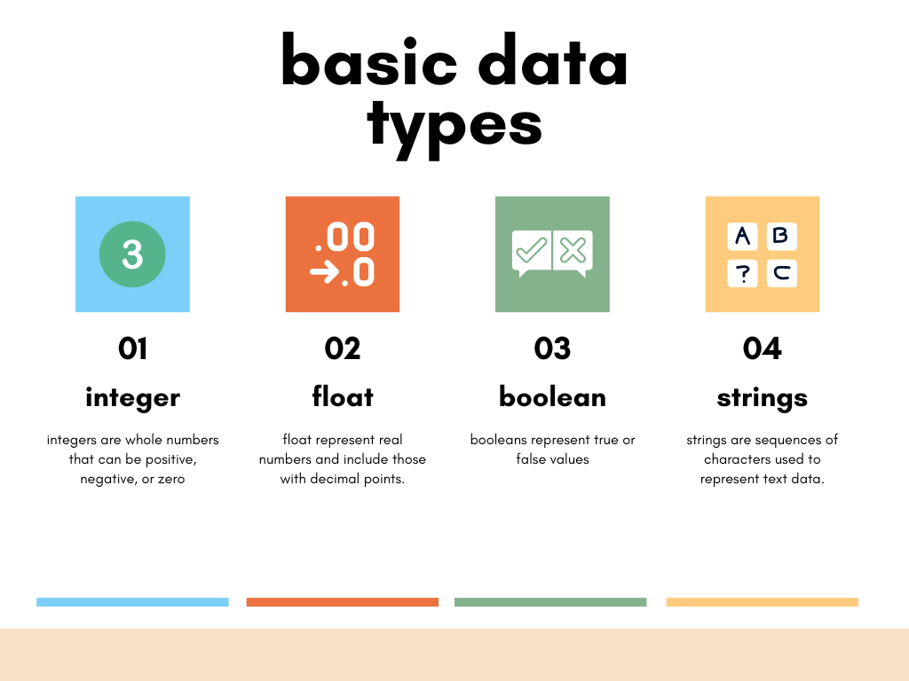
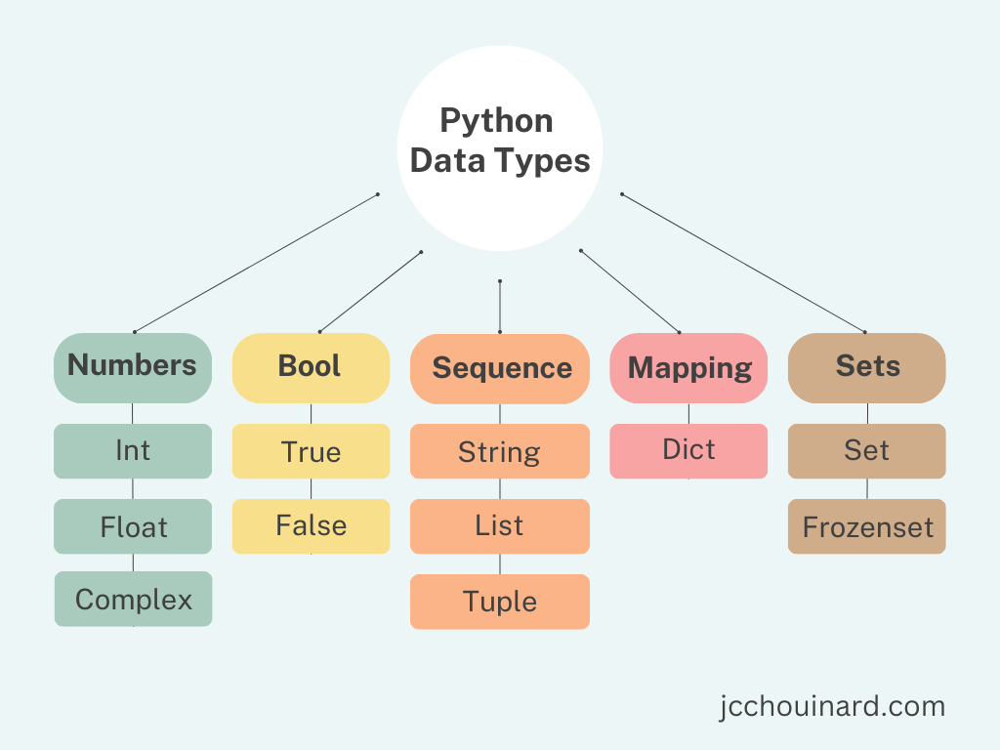
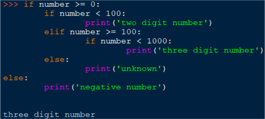
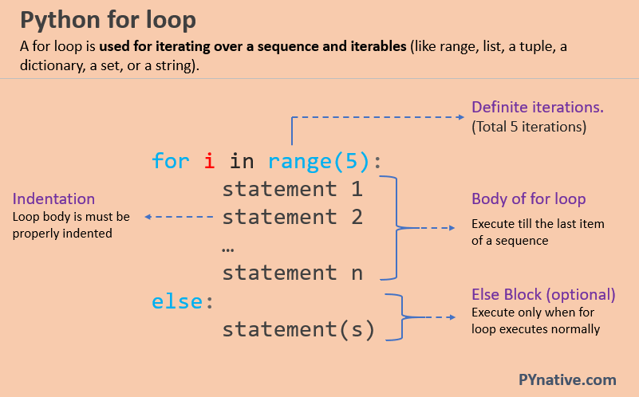
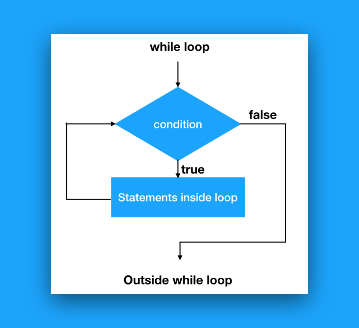

Python gyakorló oldal
A str (string) szöveges adatokat tárol. Idézőjelek közé kell írni.
Például: x = "Hello World"
Hasznos műveletek: len(x) – hossz, x.upper() – nagybetű, x.lower() – kisbetű.
Az int egész számokat tárol, tizedes pont nélkül.
Például: x = 67
Matematikai műveletek elvégezhetők rajta: összeadás, kivonás, szorzás, osztás (+, -, *, /).
A float lebegőpontos (tizedes) számokat tárol.
Például: x = 67.67
Típuskonverzió: int(x) egésszé alakítja, round(x, 2) kerekíti.
A bool logikai értéket tárol: igaz (True) vagy hamis (False).
Például: x = True vagy x = False
Feltételek kiértékelésekor automatikusan bool értéket kapunk vissza.
A list több elemet tárol sorban, szögletes zárójelek között. Az elemek módosíthatók.
Például: x = ["alma", "körte", "szilva"]
Műveletek: x.append("barack") – hozzáadás, x.remove("alma") – törlés, x[0] – indexelés.

A range() egy számsort hoz létre. Paraméterei: range(kezdet, vég, lépés).
Például: for i in range(0, 7, 2):
print(i)
Tehát i = 0, 2, 4, 6 – a végső értéket nem tartalmazza.
Ha csak egy paramétert adsz meg, pl. range(5), akkor 0-tól 4-ig számol.
A dict (szótár) kulcs-érték párokat tárol kapcsos zárójelek között.
Például: x = {"nev": "Béla", "kor": 20}
Elérés: x["nev"] visszaadja: "Béla"
Hozzáadás: x["varos"] = "Budapest" – új kulcs-érték pár felvétele.
A kulcsoknak egyedinek kell lenniük a szótáron belül.

Az if utasítás egy feltételt vizsgál meg. Ha a feltétel igaz, a blokk lefut.
Például: a = 10
if a > 5:
print("Az a nagyobb, mint 5.")
Egyenlő: a == b
Nem egyenlő: a != b
Kevesebb, mint: a < b
Kevesebb vagy egyenlő, mint: a <= b
Nagyobb, mint: a > b
Nagyobb vagy egyenlő, mint: a >= b
Az elif kulcsszó a Python azon értelmű megfogalmazása,
hogy „ha az előző feltételek nem voltak igazak,
akkor próbáld ki ezt a feltételt". Tetszőleges számú elif ág használható.
Például:
a = 33
b = 33
if a > b:
print("Az a nagyobb, mint a b.")
elif a == b:
print("Az a és a b megegyezik.")
Az else kulcsszó mindent elkap, amit az előző feltételek nem kapnak el.
Mindig az if (és elif) blokkok után áll, és csak egyszer szerepelhet.
Például:
a = 200
b = 33
if b > a:
print("A b nagyobb, mint az a.")
elif a == b:
print("Az a és a b megegyezik.")
else:
print("Az a nagyobb, mint b.")

A for ciklus egy sorozat (pl. lista, range) elemein iterál végig egyenként.
Például: gyumolcsok = ["alma", "körte", "szilva"]
for gyumolcs in gyumolcsok:
print(gyumolcs)
Ez sorban kiírja: alma, körte, szilva.
A break utasítással idő előtt kiléphetünk a ciklusból,
a continue utasítással pedig az aktuális iterációt ugorhatjuk át.
A while ciklus addig fut, amíg a megadott feltétel igaz.
Például: i = 1
while i < 6:
print(i)
i += 1
Ez kiírja az 1-től 5-ig terjedő számokat.
Fontos, hogy a ciklus változóját minden lépésben frissítsük, különben végtelen ciklus keletkezhet.
A break itt is használható a ciklus azonnali leállítására.


A def kulcsszóval hozhatunk létre saját függvényeket. A függvény neve után zárójelben adjuk meg a paramétereket.
Például: def koszont(nev):
print("Helló, " + nev + "!")
koszont("Anna")
Kimenet: Helló, Anna!
A return utasítással visszaadhatunk egy értéket a függvényből:
def osszead(a, b):
return a + b
eredmeny = osszead(3, 5)
print(eredmeny)
Kimenet: 8
A függvényeknek lehetnek alapértelmezett paraméterei is:
def koszont(nev="Ismeretlen"): – ha nem adunk meg nevet, az "Ismeretlen" értéket veszi fel.
Fájlokat a beépített open() függvénnyel lehet megnyitni. A második paraméter a megnyitási mód.
"r" – olvasás (alapértelmezett, a fájlnak léteznie kell)
"w" – írás (felülírja a fájlt, ha létezik; ha nem, létrehozza)
"a" – hozzáfűzés (a meglévő tartalom végére ír)
"x" – létrehozás (hibát dob, ha a fájl már létezik)
"b" – bináris mód (pl. képek, hangfájlok esetén: "rb", "wb")
Ajánlott a with kulcsszóval megnyitni a fájlt, mert így automatikusan bezáródik:
with open("fajl.txt", "r") as f:
tartalom = f.read()
Fájlba íráshoz "w" (felülírás) vagy "a" (hozzáfűzés) módot kell megadni.
Például: with open("naplo.txt", "w") as f:
f.write("Ez az első sor.\n")
f.write("Ez a második sor.\n")
A \n karakterrel új sort kezdhetünk. Ha már meglévő fájlhoz szeretnénk hozzáadni tartalmát, használjuk az "a" módot, különben a "w" törli az előző tartalmat.
Fájl tartalmának beolvasásához "r" módot használunk.
Például: with open("naplo.txt", "r") as f:
tartalom = f.read()
print(tartalom)
Más olvasási módszerek:
f.readline() – egyetlen sort olvas be
f.readlines() – az összes sort listába olvassa
Soronkénti feldolgozás ciklussal:
with open("naplo.txt", "r") as f:
for sor in f:
print(sor.strip())
A kivételkezelés segít abban, hogy a program ne álljon le hiba esetén. A try-except blokkot használjuk erre.
Például: try:
szam = int(input("Adj meg egy számot: "))
print(10 / szam)
except ValueError:
print("Nem adtál meg érvényes számot!")
except ZeroDivisionError:
print("Nullával nem lehet osztani!")
Az else ág csak akkor fut le, ha nem történt hiba:
else:
print("A művelet sikeresen elvégzésre került.")
A finally ág mindig lefut, hibától függetlenül – pl. fájl bezárásához, erőforrások felszabadításához hasznos:
finally:
print("A program végrehajtása befejeződött.")